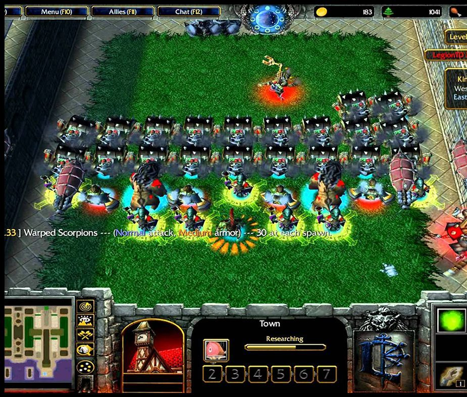
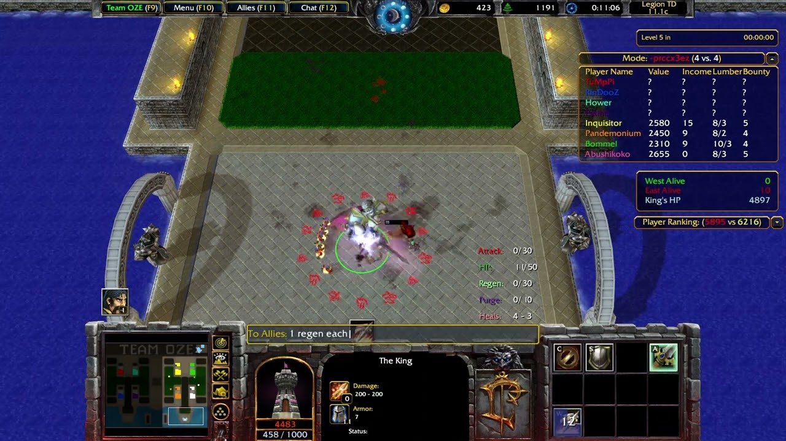

Legion TD
Legion TD (2009) was the world's first autobattler. Built by Lisk as a Warcraft 3 mod, it quickly rose to become the second most popular Warcraft 3 mod, behind only DotA (the precursor to League of Legends and Dota 2). Legion TD was played by millions of players and was the inspiration for Autochess and Teamfight Tactics, which mainstreamed the autobattler genre.


- Genre
- Strategy, Autobattler, Tower Defense
- Players
- 1–8
- Platforms
- Windows, macOS, requires Warcraft 3
- Release date
- August 2009